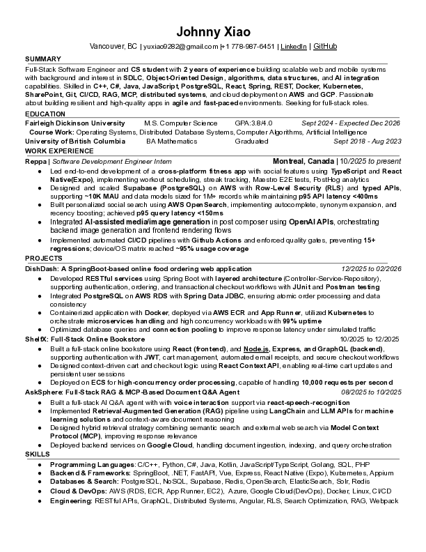

Hello, my name is Johnny.
I am a Master of Science student in Computer Science at Fairleigh Dickinson University with a strong foundation in object-oriented programming, web development, and AI-related data structures and algorithms. Through my academic projects, I have applied OOP principles to build functional applications, such as a food ordering system with persistent data storage and unit-tested code, gaining hands-on experience in designing practical software solutions under tight deadlines.
In addition, I have developed responsive web applications using JavaScript, TypeScript, HTML, and CSS, including collaborative projects where user input is analyzed to create dynamic, intelligent interactions. These experiences have strengthened my skills in writing maintainable code, designing user interfaces, and collaborating effectively with teammates to align functionality with project goals.
I bring over a year of experience in programming with C++, C, Python, and Java, as well as software version control using Git and GitHub. I am proficient in designing and implementing unit tests, building AI-related algorithms and data structures, and developing web applications. I thrive in environments that challenge me to apply my technical skills, solve problems creatively, and work collaboratively on meaningful software projects.
My Projects
-
Agent AI: Full-Stack RAG & MCP-Based Document Q&A Agent.AskSphere
-
React + Vite template and backend for running ShelfX locally.ShelfX
-
Financial Machine Learning Pipeline for Market Regime Classification.FinSight
-
Social AI: Full-stack web app for AI image generation and media management.Social-AI
-
DishDash: Online food ordering backend service built with Spring Boot and PostgreSQL.DishDash
-
A smart parking solution project.ParkSmart
-
A web crawler app.WebCrawler
-
URL shortener with a C++ backend and a React + TypeScript frontend.NanoURL
-
SpamEmailDetector: Detects spam emails using Makefile and custom logic.SpamEmailDetector
-
Advanced Retrieval-Augmented Generation system for document Q&A.RAG-Enhanced-Chatbot-with-LoRA-Fine-Tuning
-
DocHelper: A C++ document helper that stores, indexes, and searches documents.ZenIndex
-
This is a simple bubble game made with SFML in C++.BoringBubbleGame
-
Mini Spotify-like Android application built with Kotlin and Jetpack Compose.MiniSpotify-Music-App
My Resume

Click the resume to view fullscreen